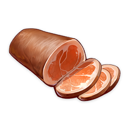
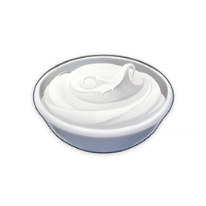

Materials
 Crab, Ham & Veggie Bake
Crab, Ham & Veggie Bake
Crab, Ham & Veggie Bake
Food and Potions
3★
Food
A luxurious bake. The scent is so rich and heavenly. You'll only be done once you've licked the plate clean.
Sources:
Obtained by cooking
Recipe:
| Items |
|---|
1×  Ham |
1×  Cream |
Effects:
| Variant | Effect |
|---|---|
| Suspicious Crab, Ham & Veggie Bake | Revives a character and restores 900 HP. |
| Crab, Ham & Veggie Bake | Revives a character and restores 1,200 HP. |
| Delicious Crab, Ham & Veggie Bake | Revives a character and restores 1,500 HP. |
| Nutritious Meal (V.593) | Revives the selected character and restores 20% of Max HP, then restores an additional 1,500 HP. |